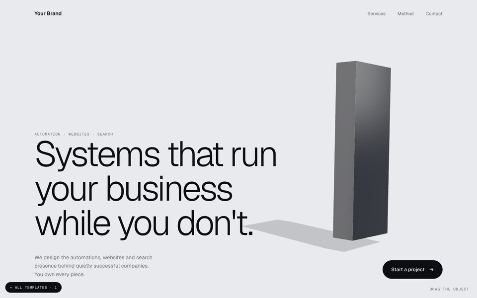

Each one is built around a single real-time 3D object you can touch. Open them on a laptop for the full effect, then check them on your phone. Tell me which one you want, or which parts to combine.
“Your Brand” is a placeholder until you choose a name. Buttons and links are not connected yet. Colours, fonts, wording and the 3D object can all be changed once you pick a direction.